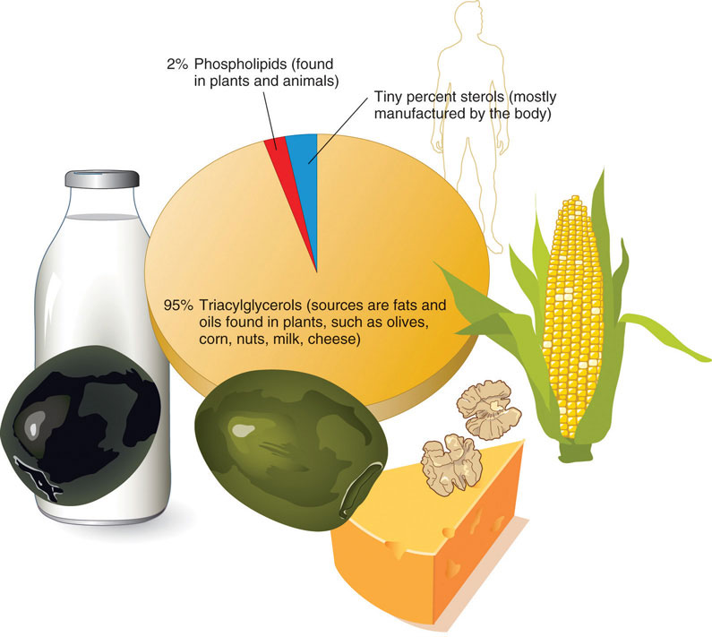
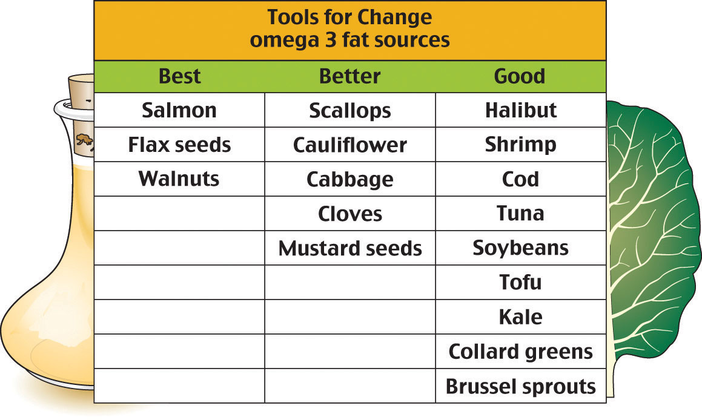

Lipids are important fats that serve different roles in the human body. A common misconception is that fat is simply fattening. However, fat is probably the reason we are all here. Throughout history, there have been many instances when food was scarce. Our ability to store excess caloric energy as fat for future usage allowed us to continue as a species during these times of famine. So, normal fat reserves are a signal that metabolic processes are efficient and a person is healthy.
Lipids are a family of organic compounds that are mostly insoluble in water. Composed of fats and oils, lipids are molecules that yield high energy and have a chemical composition mainly of carbon, hydrogen, and oxygen. Lipids perform three primary biological functions within the body: they serve as structural components of cell membranes, function as energy storehouses, and function as important signaling molecules.
The three main types of lipids are triacylglycerols, phospholipids, and sterols. Triacylglycerols (also known as triglycerides) make up more than 95 percent of lipids in the diet and are commonly found in fried foods, vegetable oil, butter, whole milk, cheese, cream cheese, and some meats. Naturally occurring triacylglycerols are found in many foods, including avocados, olives, corn, and nuts. We commonly call the triacylglycerols in our food “fats” and “oils.” Fats are lipids that are solid at room temperature, whereas oils are liquid. As with most fats, triacylglycerols do not dissolve in water. The terms fats, oils, and triacylglycerols are discretionary and can be used interchangeably. In this chapter when we use the word fat, we are referring to triacylglycerols.
PhospholipidsThe second most common of the three basic lipids. Similar to triacylglycerols, phospholipids have an acid containing phosphorus in place of one of the fatty acids. These lipids appear in all cell membranes. make up only about 2 percent of dietary lipids. They are water-soluble and are found in both plants and animals. Phospholipids are crucial for building the protective barrier, or membrane, around your body’s cells. In fact, phospholipids are synthesized in the body to form cell and organelle membranes. In blood and body fluids, phospholipids form structures in which fat is enclosed and transported throughout the bloodstream.
Sterols are the least common type of lipid. Cholesterol is perhaps the best well-known sterol. Though cholesterol has a notorious reputation, the body gets only a small amount of its cholesterol through food—the body produces most of it. Cholesterol is an important component of the cell membrane and is required for the synthesis of sex hormones, vitamin D, and bile salts.
Later in this chapter, we will examine each of these lipids in more detail and discover how their different structures function to keep your body working.
Figure 5.1 Types of Lipids
The excess energy from the food we eat is digested and incorporated into adipose tissueFatty tissue in the body that consists of masses of fat-storing cells., or fatty tissue. Most of the energy required by the human body is provided by carbohydrates and lipids. As discussed in Chapter 4 "Carbohydrates", glucose is stored in the body as glycogen. While glycogen provides a ready source of energy, lipids primarily function as an energy reserve. As you may recall, glycogen is quite bulky with heavy water content, thus the body cannot store too much for long. Alternatively, fats are packed together tightly without water and store far greater amounts of energy in a reduced space. A fat gram is densely concentrated with energy—it contains more than double the amount of energy than a gram of carbohydrate. Energy is needed to power the muscles for all the physical work and play an average person or child engages in. For instance, the stored energy in muscles propels an athlete down the track, spurs a dancer’s legs to showcase the latest fancy steps, and keeps all the moving parts of the body functioning smoothly.
Unlike other body cells that can store fat in limited supplies, fat cells are specialized for fat storage and are able to expand almost indefinitely in size. An overabundance of adipose tissue can result in undue stress on the body and can be detrimental to your health. A serious impact of excess fat is the accumulation of too much cholesterolAn important component of the cell membrane. Required for the synthesis of sex hormones, vitamin D, and bile salts. in the arterial wall, which can thicken the walls of arteries and lead to cardiovascular diseaseA disease of the heart or blood vessels.. Thus, while some body fat is critical to our survival and good health, in large quantities it can be a deterrent to maintaining good health.
TriacylglycerolsThe most common of the three basic classes of lipids and the main form fat takes in both diet and the human body. A triacylglycerol is made up of three molecules of fatty acids and one molecule of glycerol. control the body’s internal climate, maintaining constant temperature. Those who don’t have enough fat in their bodies tend to feel cold sooner, are often fatigued, and have pressure sores on their skin from fatty acid deficiency. Triacylglycerols also help the body produce and regulate hormones. For example, adipose tissue secretes the hormone leptin, which regulates appetite. In the reproductive system, fatty acids are required for proper reproductive health; women who lack proper amounts may stop menstruating and become infertile. Omega-3 and omega-6 essential fatty acids help regulate cholesterol and blood clotting and control inflammation in the joints, tissues, and bloodstream. Fats also play important functional roles in sustaining nerve impulse transmission, memory storage, and tissue structure. More specifically in the brain, lipids are focal to brain activity in structure and in function. They help form nerve cell membranes, insulate neurons, and facilitate the signaling of electrical impulses throughout the brain.
Did you know that up to 30 percent of body weight is comprised of fat tissue? Some of this is made up of visceral fat or adipose tissue surrounding delicate organs. Vital organs such as the heart, kidneys, and liver are protected by visceral fat. The composition of the brain is outstandingly 60 percent fat, demonstrating the major structural role that fat serves within the body. You may be most familiar with subcutaneous fat, or fat underneath the skin. This blanket layer of tissue insulates the body from extreme temperatures and helps keep the internal climate under control. It pads our hands and buttocks and prevents friction, as these areas frequently come in contact with hard surfaces. It also gives the body the extra padding required when engaging in physically demanding activities such as ice- or roller skating, horseback riding, or snowboarding.
The dietary fats in the foods we eat break down in our digestive systems and begin the transport of precious micronutrients. By carrying fat-soluble nutrients through the digestive process, intestinal absorption is improved. This improved absorption is also known as increased bioavailabilityRefers to the proportion of nutrients that are absorbed or become available in the bloodstream.. Fat-soluble nutrients are especially important for good health and exhibit a variety of functions. Vitamins A, D, E, and K—the fat-soluble vitamins—are mainly found in foods containing fat. Some fat-soluble vitamins (such as vitamin A) are also found in naturally fat-free foods such as green leafy vegetables, carrots, and broccoli. These vitamins are best absorbed when combined with foods containing fat. Fats also increase the bioavailability of compounds known as phytochemicalsNonessential plant compounds considered to have a beneficial impact on human health., which are plant constituents such as lycopene (found in tomatoes) and beta-carotene (found in carrots). Phytochemicals are believed to promote health and well-being. As a result, eating tomatoes with olive oil or salad dressing will facilitate lycopene absorption. Other essential nutrients, such as essential fatty acids, are constituents of the fats themselves and serve as building blocks of a cell.
Figure 5.2 Food Sources for Fat Soluble Vitamins
Note that removing the lipid elements from food also takes away the food’s fat-soluble vitamin content. When products such as grain and dairy are processed, these essential nutrients are lost. Manufacturers replace these nutrients through a process called enrichment.
Remember, fat-soluble nutrients require fat for effective absorption. For your next snack, look for foods that contain vitamins A, D, E, and K. Do these foods also contain fat that will help you absorb them? If not, think of ways to add a bit of healthy fat to aid in their absorption. (For more details on healthy fat, refer to Section 5.4 "Understanding Blood Cholesterol" of this chapter.)
Fat-rich foods naturally have a high caloric density. Foods that are high in fat contain more calories than foods high in protein or carbohydrates. As a result, high-fat foods are a convenient source of energy. For example, 1 gram of fat or oil provides 9 kilocalories of energy, compared with 4 kilocalories found in 1 gram of carbohydrate or protein. Depending on the level of physical activity and on nutritional needs, fat requirements vary greatly from person to person. When energy needs are high, the body welcomes the high-caloric density of fats. For instance, infants and growing children require proper amounts of fat to support normal growth and development. If an infant or child is given a low-fat diet for an extended period, growth and development will not progress normally. Other individuals with high-energy needs are athletes, people who have physically demanding jobs, and those recuperating from illness.
When the body has used all of its calories from carbohydrates (this can occur after just twenty minutes of exercise), it initiates fat usage. A professional swimmer must consume large amounts of food energy to meet the demands of swimming long distances, so eating fat-rich foods makes sense. In contrast, if a person who leads a sedentary lifestyle eats the same high-density fat foods, they will intake more fat calories than their body requires within just a few bites. Use caution—consumption of calories over and beyond energy requirements is a contributing factor to obesity.
Fat contains dissolved compounds that contribute to mouth-watering aromas and flavors. Fat also adds texture to food. Baked foods are supple and moist. Frying foods locks in flavor and lessens cooking time. How long does it take you to recall the smell of your favorite food cooking? What would a meal be without that savory aroma to delight your senses and heighten your preparedness for eating a meal?
Fat plays another valuable role in nutrition. Fat contributes to satietyThe feeling of being satisfied or full., or the sensation of fullness. When fatty foods are swallowed the body responds by enabling the processes controlling digestion to retard the movement of food along the digestive tract, thus promoting an overall sense of fullness. Oftentimes before the feeling of fullness arrives, people overindulge in fat-rich foods, finding the delectable taste irresistible. Indeed, the very things that make fat-rich foods attractive also make them a hindrance to maintaining a healthful diet.
While fats provide delicious smells, tastes, and textures to our foods, they also provide numerous calories. To allow your body to experience the satiety effect of the fat before you overindulge, try savoring rich foods. Eating slowly will allow you to both fully enjoy the experience and be sated with a smaller portion. Remember to take your time. Drink water in between bites or eat a lower fat food before and after a higher fat food. The lower-fat foods will provide bulk, but fewer calories.